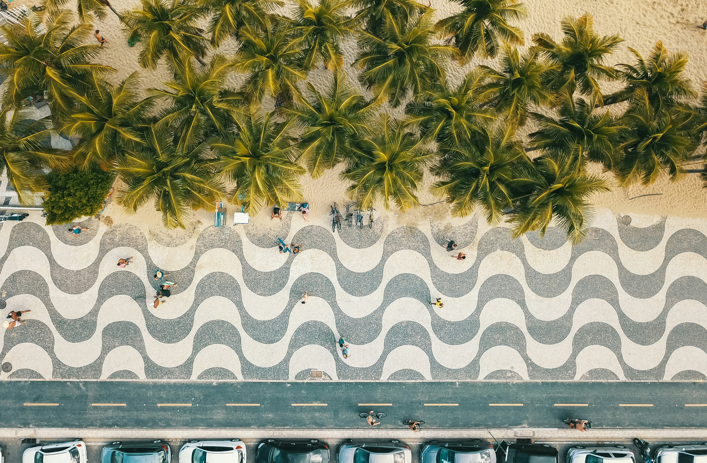
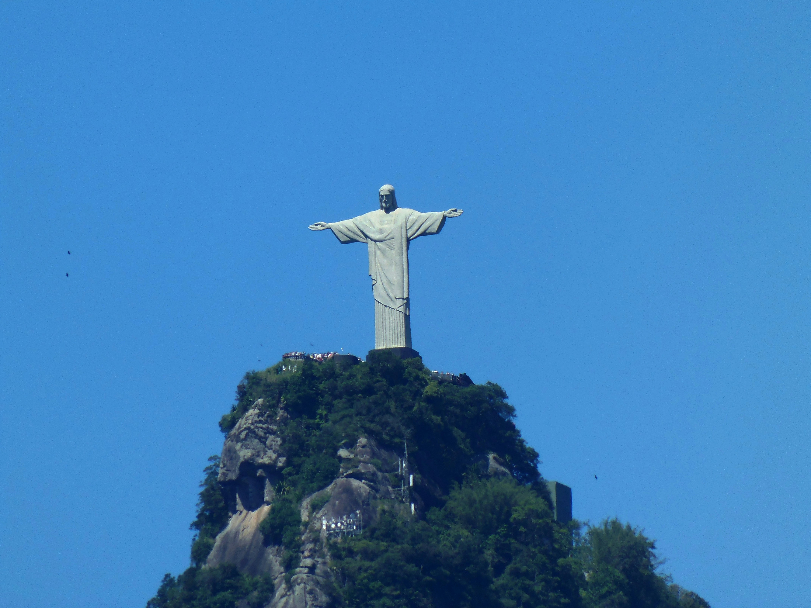
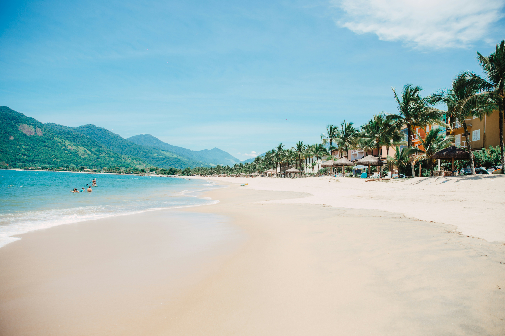
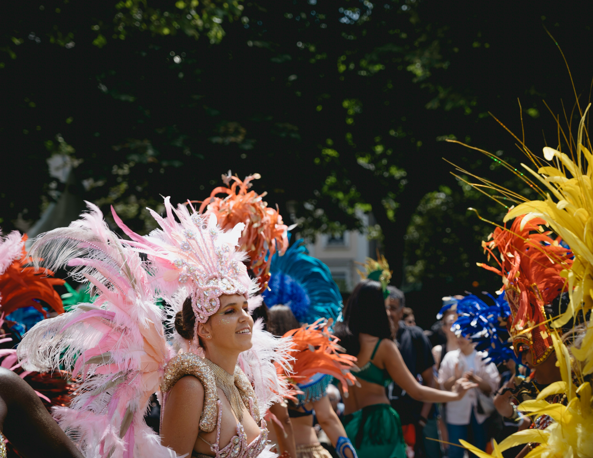

visit Rio de Janeiro and enjoy the trip

Christ the Redeemer stands 30 meters tall atop Corcovado Mountain, watching over Rio with outstretched arms spanning 28 meters wide. This iconic Art Deco statue, completed in 1931, is one of the New Seven Wonders of the World and offers 360-degree panoramic views of the entire city, beaches, Sugarloaf Mountain, and Guanabara Bay. The journey to the summit is an experience itself, traveling through Tijuca National Forest, the world's largest urban rainforest.
You can reach the statue by cog train, van, or hiking trail through lush tropical vegetation filled with monkeys, toucans, and butterflies. Early morning visits offer clearer skies and fewer crowds, while sunset provides dramatic lighting perfect for photography. The site can be crowded, but the breathtaking views and spiritual atmosphere make it unforgettable. Book tickets online in advance, especially during peak tourist season. The surrounding Tijuca Forest offers additional hiking trails, waterfalls, and caves for nature enthusiasts wanting to explore beyond the monument.

Sugarloaf Mountain (Pão de Açúcar) rises 396 meters above Guanabara Bay, accessible via two stages of cable car rides that have been thrilling visitors since 1912. The journey begins at Praia Vermelha, ascending first to Morro da Urca at 220 meters, then continuing to Sugarloaf's peak. Each ride offers increasingly spectacular views of Rio's coastline, beaches, mountains, and the sprawling city below.
The summit provides one of the most photographed vistas in the world, especially magical at sunset when the golden light bathes Copacabana and Ipanema beaches while city lights begin twinkling below. Rock climbers can be spotted scaling the granite faces, as the mountain offers some of Brazil's best climbing routes. The mid-station at Morro da Urca features restaurants, shops, and a helipad for those wanting aerial tours. Visit in late afternoon to experience both daylight and illuminated city views. The surrounding area offers trails, beaches, and the historic Forte de São João with military museum exhibits.

Rio de Janeiro is the birthplace of samba and home to the world's most famous Carnival celebration. Even outside Carnival season, the city pulses with rhythm and music in neighborhoods like Lapa, where historic arches frame streets filled with samba clubs called "gafieiras." Visit Rio Scenarium, a three-story antique-filled venue hosting live samba performances nightly, or head to Pedra do Sal for free authentic samba circles every Monday where locals gather to dance under the stars.
Take a tour of the Sambadrome, the purpose-built stadium where samba schools compete during Carnival with elaborate floats, costumes, and choreographed performances involving thousands of dancers. Many samba schools welcome visitors to their rehearsals in the months leading to Carnival, offering an authentic glimpse into this cultural phenomenon. Learn samba dancing at one of many dance schools offering tourist classes, or simply join the crowds at street parties called "blocos" that occur year-round. The City of Samba museum showcases giant Carnival floats and costumes, while the Museum of Samba tells the history of this distinctly Brazilian art form that reflects the nation's African heritage and cultural diversity.